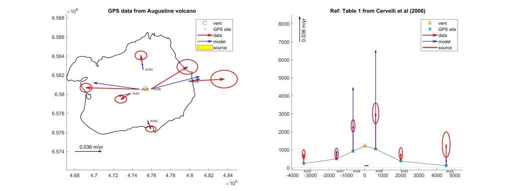
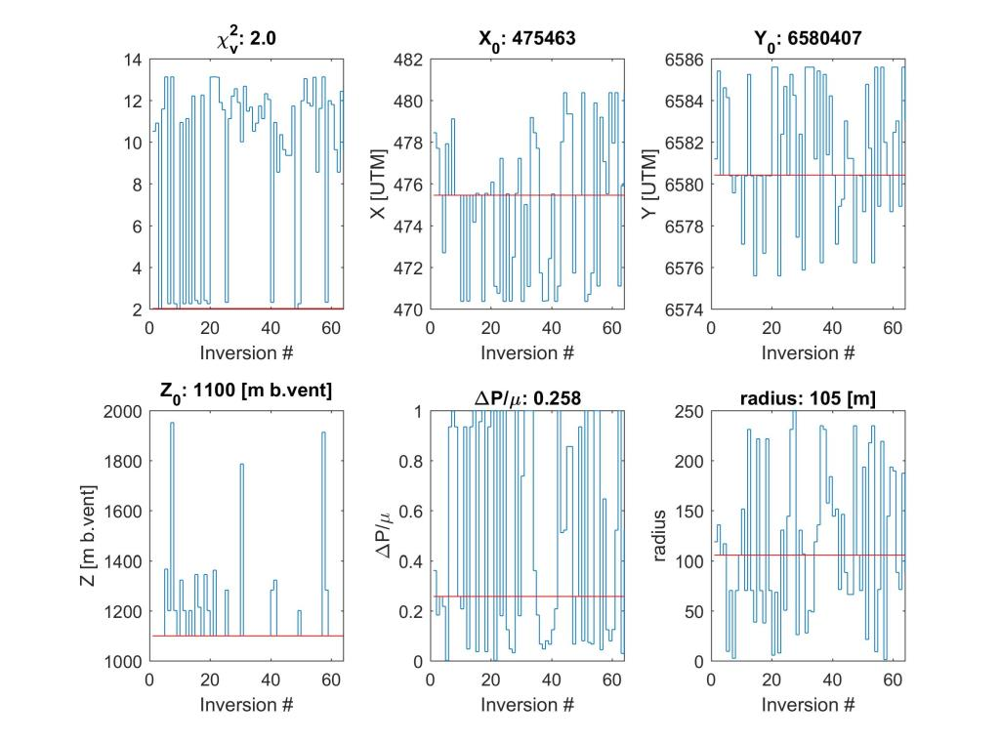
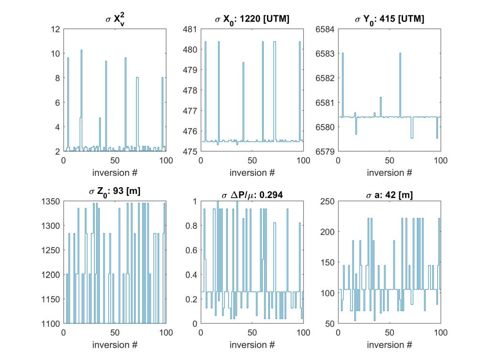

GPSSill.m
- This program inverts GPS measurements to find the best fit sill-like source.
- M. Battaglia - mbattaglia@usgs.gov
- Version: (06/20/2017)
Contents
Description
This program inverts GPS measurements to find the best fit sill-like source.
- The inversion algorithm uses the MATLAB function fmincon (optimization toolbox) with a random grid search (Battaglia et al, 2013, JVGR 254, 1-4).
- The algorithm for the sill source is based on Fialko et al. (2001), GJI 146, 181–190.
- The error algorithm is based on Wright et al (1999), EPSL 172, 23–37.
Program I/O files
Input files
- InputDataFile.txt : text file with inversion parameters
- [GPSdatafile].txt : text file with GPS data
- map.txt : text file with volcano contour map
Output files
- [GPSdatafile]RSL.txt : text file with best-fit results
- [GPSdatafile]RSL.jpg : jpeg file with vector plot of best-fit results
- [GPSdatafile]INV.txt : text file with best-fit statistics
- [GPSdatafile]INV.jpg : jpeg file with best-fit statistics
- [GPSdatafile]ERR.txt : text file with best-fit parameters' errors
- [GPSdatafile]ERR.jpg : jpg file with best-fit parameters' errors
Examples
Examples of the input and output files are available in the folder examples
To run the software
TO RUN THE COMPILED VERSION
1 MATLAB Compiler
2 The following files must be in the same directory of GPSSill.exe
- InputDataFile.txt
- [GPSdatafile].txt
- map.txt [optional]
3 Edit the input files
- [GPSDataFile].txt
- InputDataFile.txt
5 Double click on GPSSill.exe
TO RUN THE MATLAB VERSION
The software runs on 64-bit GNU/Linux, Mac OS X, or MS-Windows, and it requires Matlab 9.2 (R2017a) or later. It is not currently usable on any 32-bit platform, on Solaris, or with Octave.
1 The following files / *folders must be in the same directory of GPSSill.m*
- functions
- InputDataFile.txt
- [GPSdatafile].txt
- map.txt [optional]
2 Edit the input files
- [GPSDataFile].txt
- InputDataFile.txt
3 Run GPSSill.m
Plots
[GPSdatafile]RSL.jpg - vector plot with best fit results

[GPSdatafile]INV.jpg - histogram plot with best-fit statistics

[GPSdatafile]ERR.jpg - histogram plot with best-fit parameters' errors

USGS Software Disclaimer
The software and related documentation were developed by the U.S. Geological Survey (USGS) for use by the USGS in fulfilling its mission. The software can be used, copied, modified, and distributed without any fee or cost. Use of appropriate credit is requested.
The USGS provides no warranty, expressed or implied, as to the correctness of the furnished software or the suitability for any purpose. The software has been tested, but as with any complex software, there could be undetected errors. Users who find errors are requested to report them to the USGS. The USGS has limited resources to assist non-USGS users; however, we make an attempt to fix reported problems and help whenever possible.
THE SOFTWARE IS PROVIDED AS IS, WITHOUT WARRANTY OF ANY KIND